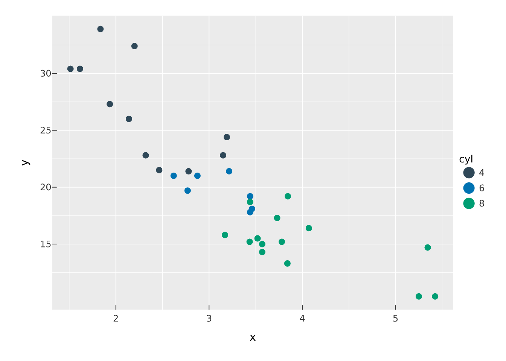
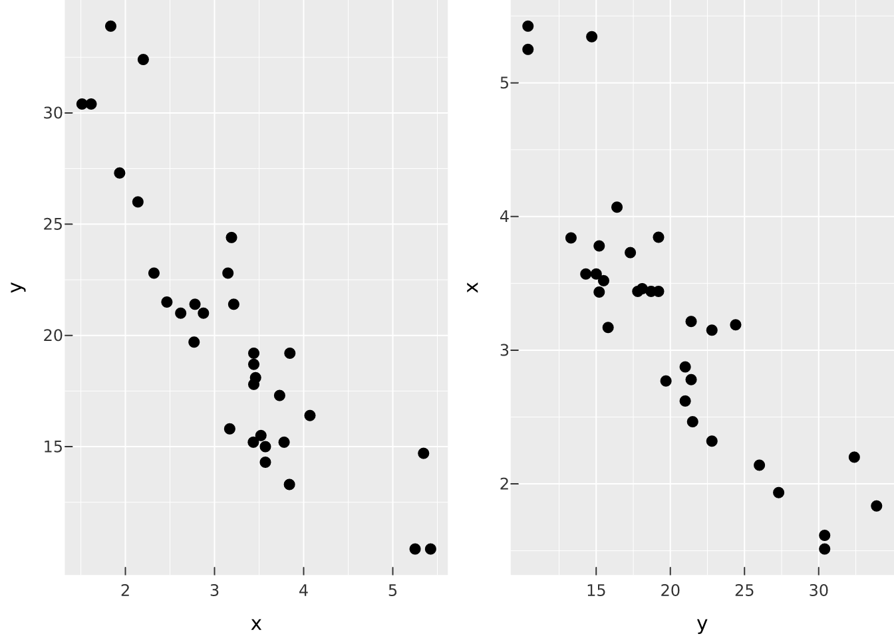

p |> select_point("hi", on = "hover") # hover a mark
p |> select_interval("brush", on = "x") # drag an x-rangeMost of vellumplot describes a static picture. But interaction can be part of the plot too — declared in the spec, travelling with it, and enacted by any capable host (today, vellumwidget). This is different from configuring a widget after the fact: the interaction is a first-class, serialisable piece of the plot.
Everything on this page is inert on a static render — a plot with interactions compiles and draws exactly like one without (the figures below are the static renders). The interaction comes alive only when a host such as vellumwidget::as_widget() enacts it.
Selections
A selection is a named set of data elements defined by a user gesture. On its own it does nothing; you refer to it elsewhere. Declare one with select_point() (a click or hover, or a legend value) or select_interval() (a brush or lasso, optionally locked to an axis):
on sets the gesture; empty = TRUE (the default) means an empty selection contains everything — so an untouched plot shows its full self and interacting narrows it.
Conditional encoding: condition()
Use condition() as the value of an aesthetic to make it depend on selection membership: members get the first value, non-members the second.
df <- data.frame(x = mtcars$wt, y = mtcars$mpg, cyl = factor(mtcars$cyl))
vplot(df) |>
mark_point(x = x, y = y, color = condition("hi", cyl, "grey80")) |>
select_point("hi", on = "hover")
condition() is transparent to the grammar: the if_true branch trains the colour scale and draws the legend exactly as color = cyl would, so the static render is the full, meaningful plot. With empty = TRUE, nothing is selected initially, so every point shows its if_true colour; once a host activates the selection, non-members switch to if_false (here "grey80") — the spotlight.
Omit if_false to fall back to the theme’s dim appearance:
mark_point(x = x, y = y, color = condition("hi", cyl)) # non-members just dimFiltering: filter_by()
filter_by() shows only the selection’s members, hiding the rest:
vplot(df) |>
mark_point(x = x, y = y) |>
select_interval("brush", on = "xy") |>
filter_by("brush")Cross-filtering across views
The real power is pointing a second view at a selection defined on a first — brush one panel, a linked panel narrows to those rows while the source stays full. Define the selection once, add_selection() it on the source, and filter_by() it on the target:
sel <- select_interval("brush", on = "xy")
hconcat(
vplot(df) |> mark_point(x = x, y = y) |> add_selection(sel),
vplot(df) |> mark_point(x = y, y = x) |> filter_by(sel)
)
The two views share row identity, so a gesture in one maps to the matching rows in the other. This cross-view coordination is exactly what a widget flag cannot express — it lives in the plot.
Overview + detail: bind_scale()
bind_scale() binds a panel’s view to an interval selection on another (an overview), so brushing the overview pans/zooms the detail. It is declared in the spec today; host enactment is in progress.
Which marks are addressable
Give a mark an identity with data_id= (and, optionally, a tooltip=) and it becomes hoverable, selectable and cross-filterable. This is no longer limited to the batched marks (points, bars, tiles, segments): a line or step series is one addressable object, a filled mark_area() / mark_ribbon() band is one polygon, mark_text() labels are addressable per datum, mark_label() keys by its rounded background box, and an sf polygon / choropleth keys per feature.
# hover the whole trend line as one object
vplot(pressure) |>
mark_line(x = temperature, y = pressure, data_id = "vapor-pressure") |>
select_point("series", on = "hover")A mark you leave without a key is simply not addressable — and, for lines, polygons and text, it contributes no row to the interaction model at all. That is deliberate: a plot’s gridlines and axis labels are unkeyed text and lines, and they must not drown the marks that carry meaning. So absence of a key is a choice you are making, not a limitation.
What a host does with it
vellumplot compiles once and carries the interaction declarations plus the per-element metadata a host needs (interaction_model() returns the declaration block). The host reads them and wires the gestures it already performs on the frozen scene — highlight, hide, pan/zoom — with no recompilation. Turn any of the plots above into a live widget with:
library(vellumwidget)
vplot(df) |>
mark_point(x = x, y = y, color = condition("hi", cyl, "grey80")) |>
select_point("hi", on = "hover") |>
as_widget()The interaction is display-tier by design: it reacts on the frozen scene (highlight, filter-by-hiding, pan/zoom) and never recomputes the grammar. See select_point(), select_interval(), condition(), filter_by(), add_selection(), and bind_scale() in the reference.